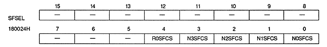

Special function code select bit : Special function code select bit (N0SFCS, N1SFCS, N2SFCS, N3SFCS, R0SFCS)
| N0SFCS | 180024H | Bit 0 | For NBG0 (or RBG1 For use) |
| N1SFCS | 180024H | Bit 1 | For NBG1 |
| N2SFCS | 180024H | Bit 2 | For NBG2 |
| N3SFCS | 180024H | Bit 3 | For NBG3 |
| R0SFCS | 180024H | Bit 4 | For RBG0 |
| xxSFCS | Process |
| 0 | Enable special function code A |
| 1 | Enable special function code B |